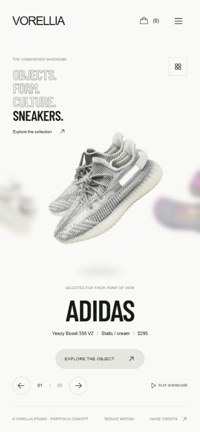

Vorellia Footwear
A footwear collection presented as a moving editorial. Product photography, oversized type and a choreographed carousel make browsing part of the experience.
The experience
Products move between three positions while scale, focus and typography change together. Visitors can use arrows, a keyboard or swipe gestures.
Beyond the opening
The concept includes collection search and filters, product details, size selection and a demo shopping bag.
What we bring
Interface design, responsive development and interaction choreography using Next.js and GSAP. Reduced motion and keyboard controls are part of the build.
Considered on every screen.
The mobile layout gives products room while keeping navigation and selection within reach. The interaction adapts to touch as well as a mouse.
Open the project ↗ (opens a new tab; ChatGPT sign-in may be required)The hosted preview may require a ChatGPT sign-in.

Fictional storefront, with no sales or affiliation with the depicted brands. Product photography is credited in photography sources and licenses. Preview montages use actual project screenshots.